Options guide: welt pocket, flap or slit pocket
A welt pocket is sewn into a slit cut in the garment: only the opening shows on the outside, the pocket is hidden inside. The opening can be edged with one or two lips, the welts, covered with a flap, or simply faced: it is then a slit pocket.
This pattern offers five pocket types: double welt, single welt, single welt with flap, slit pocket and slit pocket with flap. It can be placed on any garment, jacket, coat, trousers, skirt or dress, horizontal, angled or vertical.
Pocket type
Five options:
- Double welt: two equal lips edge the opening, top and bottom.
- Single welt: a single, wider lip covers the whole opening.
- Single welt with flap: the same lip, with a flap slipped into the top of the opening, covering it.
- Slit pocket: no lip, no flap. The opening is a simple slit with neat edges, almost closed at rest.
- Slit pocket with flap: the same slit, covered with a flap.
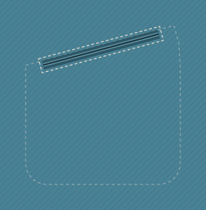
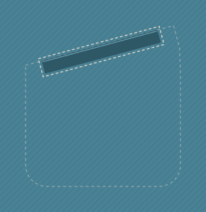
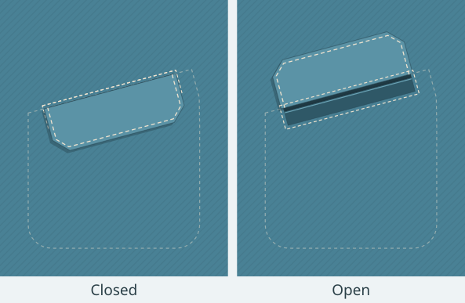
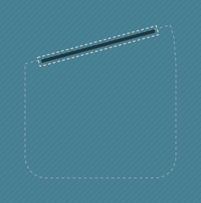
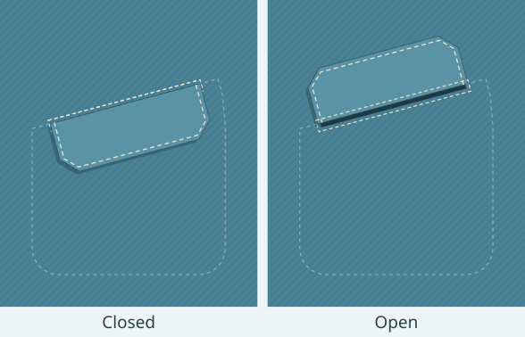
Pockets with a flap are shown in two views, closed and open (flap raised).
Opening
Length: from 8 to 20 cm, 14 cm by default. To slide your whole hand in, allow at least 16 cm.
Angle: from 0° (horizontal opening) to 90° (vertical opening), 15° by default.
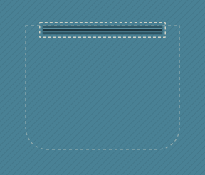
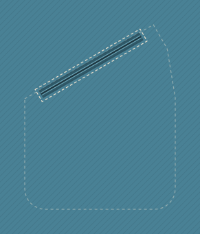
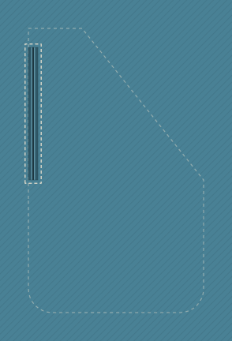
With a flap, the angle is limited to 45° for a free flap; beyond that, the flap must be buttoned (see "Flap").
Left pocket, right pocket or pair
As soon as the opening is angled, the left and right pockets are mirror images of each other. The "Side" menu (active as soon as the angle is greater than 0°) offers:
- Both (a pair), the default: the pattern contains both pockets, marked (a) left pocket and (b) right pocket.
- Right pocket
- Left pocket
Respect the right and wrong sides of the fabric when they differ: a piece cut the wrong way round would give an opening angled in the wrong direction. This also applies to the frame template, to be placed on the right side of the garment.
Lips
The lip is the folded strip of fabric that edges the opening. You set its visible width:
- Double welt: from 0.4 to 0.7 cm per lip, 0.5 cm by default.
- Single welt: from 1 to 2.5 cm, 1.5 cm by default.
The narrower the lip, the harder the welt is to sew. For a first pocket, keep 0.5 cm or more for a double welt.
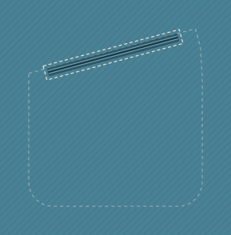
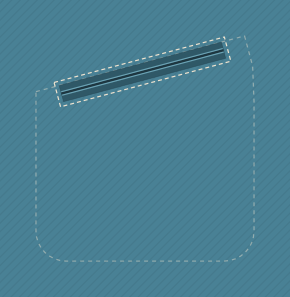
Flap
The flap covers the opening. It combines with a single welt or with a slit pocket.
- Visible height: adjustable, from 4 to 7 cm, 5 cm by default.
- Shape: rectangular, cut corners or rounded corners.
- Button: the flap can be buttoned. Above 45° of angle, it must be, otherwise it does not stay closed: the "Buttoned flap" box then ticks itself.
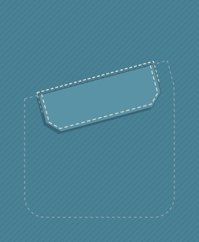
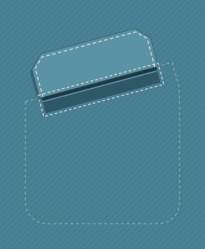
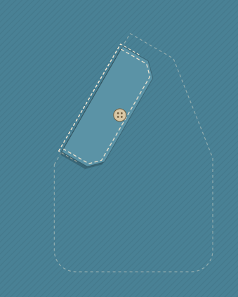
The pocket is hidden inside the garment. You set its usable depth, measured below the low point of the opening: from 8 to 25 cm, 14 cm by default. Its width follows the opening length.
Pattern pieces
Depending on the pocket type, the pattern contains the following pieces (per pocket):
| Piece | In | For |
|---|---|---|
| Frame template | paper | all types: used to trace the opening on the right side of the garment |
| Opening reinforcement | fusible interfacing | all types |
| Welt | main or contrasting fabric | double welt (2), single welt (1) |
| Welt interfacing | fusible interfacing | welt types |
| Facing | main or contrasting fabric | all types |
| Front pocket bag | lining | welt types |
| Turned front pocket bag | main fabric if light, otherwise lining with a facing | slit pockets |
| Back pocket bag | lining | all types |
| Flap | main or contrasting fabric | types with flap |
| Flap interfacing | fusible interfacing | types with flap |
Fusible pieces have no seam allowance.
See also the sewing guide.